Install Guide + Tool Downloads
Pick your platform. Every tab has step-by-step instructions and a pinned download list with all the tools.
Before using any tools, you must install Tampermonkey.
- Go to Tampermonkey's site and click Add to Chrome.
-
Right-click the Tampermonkey icon near your address bar → select Manage extension.
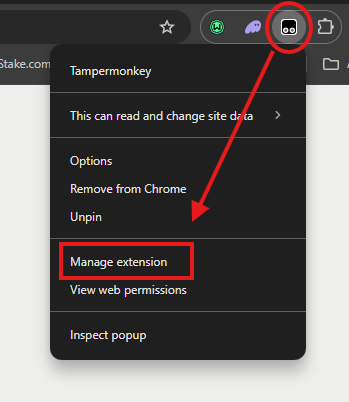
-
On the extension page, find Allow User Scripts and turn it on. This is required by Chrome — without it, no userscript can run.
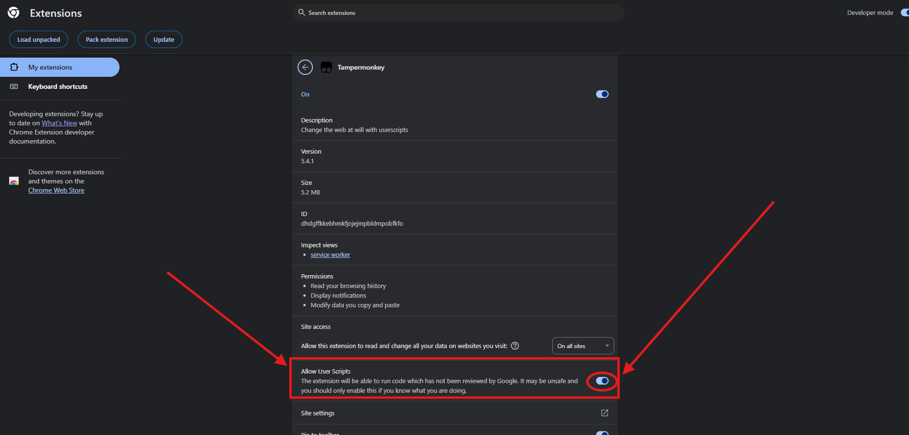
-
Download a tool from the Desktop Downloads pin.
Desktop DownloadsDice Tool (Stake + Shuffle) StakeWin-streak counter, autoplay stopper, balance export, strategy import. Install both: script + app.Stake IOW / Smart StakeManual/IOW/Smart bet-sizing for Stake Dice + Limbo, live stats.Nuts IOW / Smart NutsManual/IOW/Smart bet-sizing for Nuts Dice + Target, live stats.Stake Mines Auto StakeAuto-plays Stake Mines with random picks, adjustable speed, live stats.Nuts Mines Auto NutsAuto-plays Nuts Mines with rapid picks, auto-cashout, adjustable speed.Stake Keno Presets StakeSave + recall Keno picks + difficulty on Stake.Nuts Keno Presets NutsSave + recall Keno picks + risk on Nuts. Shares presets with Stake Keno.Stake Auto-Vault StakeAuto-vaults a % of profits on Stake.com/us and mirrors.Nuts Auto-Vault NutsAuto-vaults a % of play-balance profits on Nuts.gg.
-
Click the Tampermonkey icon → Create a new script…
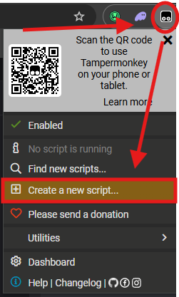
-
Drag the downloaded .user.js file from your file explorer into the Tampermonkey editor.
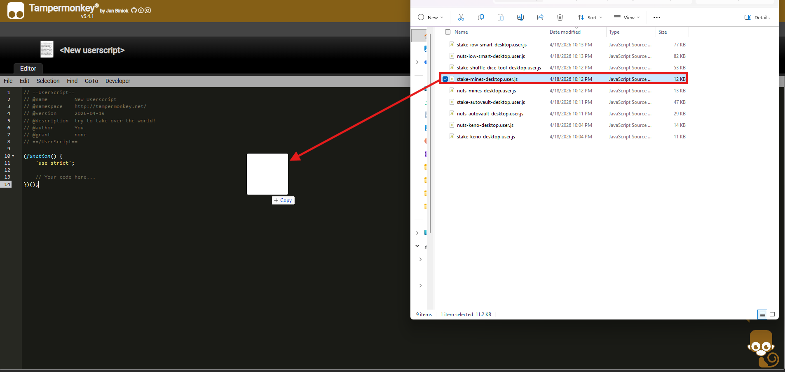
-
Click Install on the page that appears.
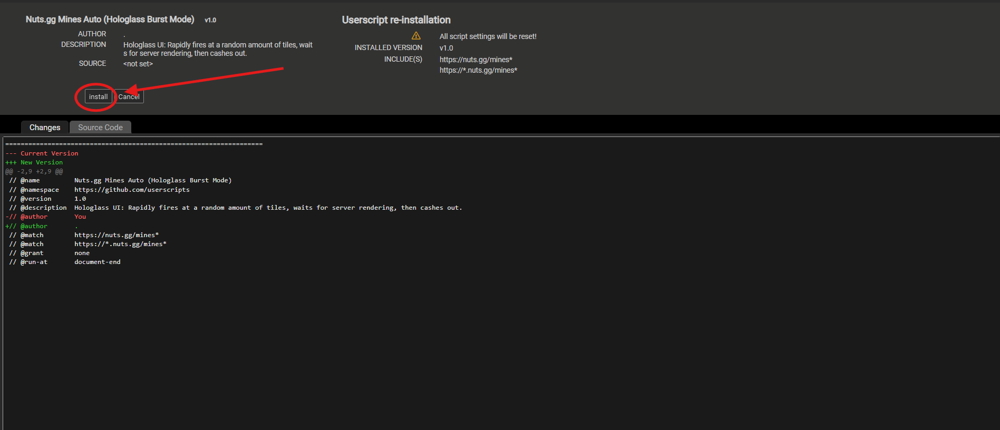
- Open the site the tool is designed for. Refresh the page once. The tool appears.
Before using any tools, you must install Firefox + Tampermonkey. Chrome on Android doesn't support extensions.
- Install Firefox Browser by Mozilla from the Play Store. Not Firefox Focus, not Firefox Beta — only the regular Firefox supports extensions.
- Open Firefox → tap the ⋮ menu → Extensions.
- On the Extensions page, scroll to the bottom, and tap Find more extensions.
-
Search for Tampermonkey, tap the first result, then tap Add to Firefox on the addons.mozilla.org page that opens.
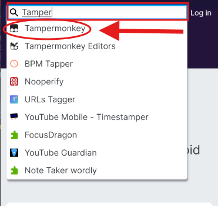
-
Back in Firefox, open the ⋮ menu → tap the Tampermonkey icon near the top.
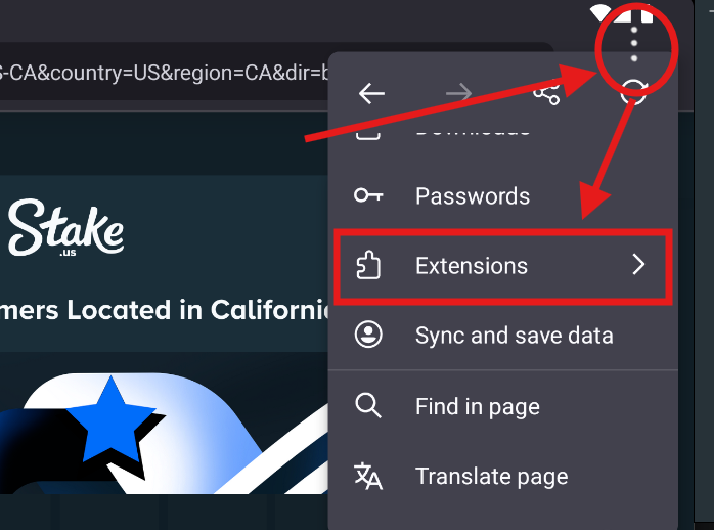
- This opens Tampermonkey's dashboard with Installed Userscripts / Settings / Utilities tabs. This is where you manage all your scripts.
-
Long-press a download link from the Mobile Downloads pin, copy the link, and paste it into Firefox's URL bar.
Mobile DownloadsDice Tools (Stake + Shuffle) StakeFull Dice Tools app (calculator, simulator, optimizer, one-tap strategy import) in a phone-friendly floating panel.Stake IOW / Smart StakeMobile Stake Dice/Limbo bet-sizing with Manual/IOW/Smart modes and live stats.Nuts IOW / Smart NutsMobile Nuts Dice/Target bet-sizing with Manual/IOW/Smart modes and live stats.Stake Mines Auto StakeMobile Stake Mines auto-player with touch-friendly controls and live stats.Nuts Mines Auto NutsMobile Nuts Mines auto-player with touch-friendly controls.Stake Keno Presets StakeMobile Stake Keno preset manager — save and recall your picks + difficulty on the go.Nuts Keno Presets NutsMobile Nuts Keno preset manager. Shares presets with Stake Keno.Stake Auto-Vault StakeMobile Stake Auto-Vault — auto-vaults a % of profits on Stake.com/us and mirrors.Nuts Auto-Vault NutsMobile Nuts Auto-Vault — auto-vaults a % of play-balance profits.
- This opens a Tampermonkey page — tap INSTALL.
- Open the site the tool is designed for. Refresh the page once. The relevant tool should appear.
Before using any tools, you must install the Userscripts app.
-
Open the App Store and search for Userscripts. Look for the
</>icon by Justin Wasack. Tap GET to install.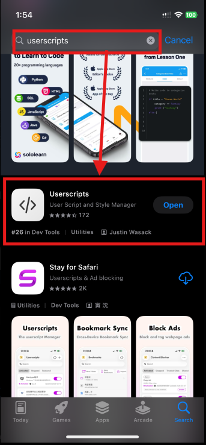
-
Open iPhone Settings → Apps → Safari → Extensions → Userscripts. (Or just search "Safari" in Settings.)
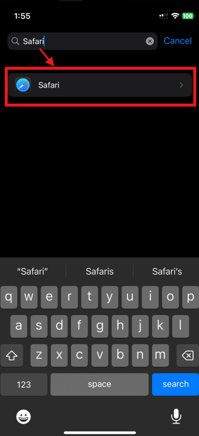
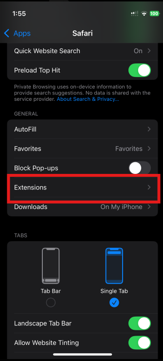
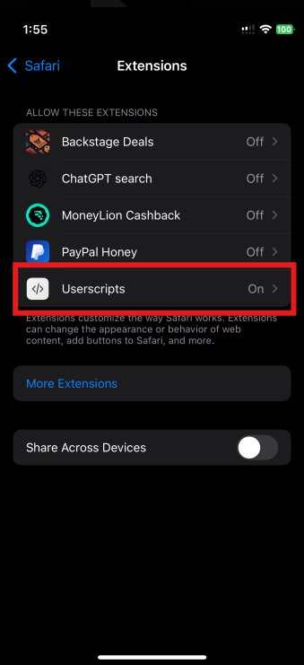
-
Toggle Allow Extension to ON. Under Other Websites, select Allow.
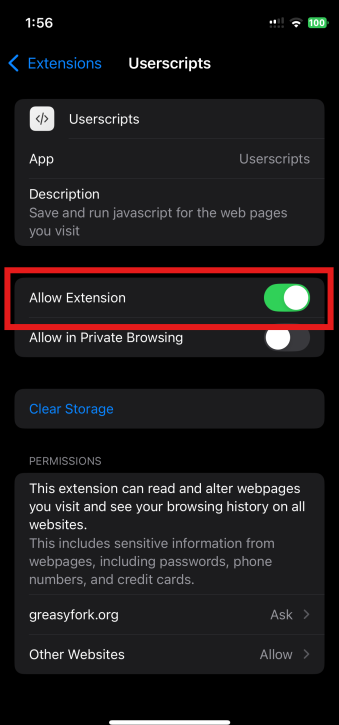
-
Tap the download link for a tool from the Mobile Downloads pin. Safari opens and shows the raw script text, or it may just pop up the script icon.
Mobile DownloadsDice Tools (Stake + Shuffle) StakeFull Dice Tools app (calculator, simulator, optimizer, one-tap strategy import) in a phone-friendly floating panel.Stake IOW / Smart StakeMobile Stake Dice/Limbo bet-sizing with Manual/IOW/Smart modes and live stats.Nuts IOW / Smart NutsMobile Nuts Dice/Target bet-sizing with Manual/IOW/Smart modes and live stats.Stake Mines Auto StakeMobile Stake Mines auto-player with touch-friendly controls and live stats.Nuts Mines Auto NutsMobile Nuts Mines auto-player with touch-friendly controls.Stake Keno Presets StakeMobile Stake Keno preset manager — save and recall your picks + difficulty on the go.Nuts Keno Presets NutsMobile Nuts Keno preset manager. Shares presets with Stake Keno.Stake Auto-Vault StakeMobile Stake Auto-Vault — auto-vaults a % of profits on Stake.com/us and mirrors.Nuts Auto-Vault NutsMobile Nuts Auto-Vault — auto-vaults a % of play-balance profits.
-
At the bottom of the page tap the Share icon and then select Save to Files.
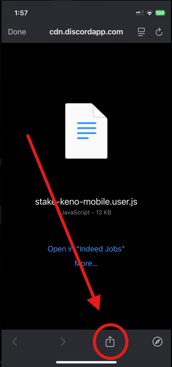
-
If not already selected, from the drop-down select the Userscripts folder to save the script into.
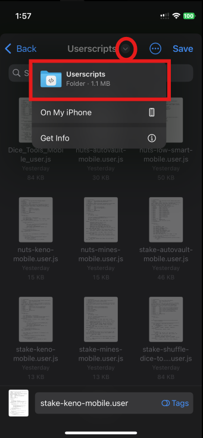
-
Tap Save (disk icon, top-right).
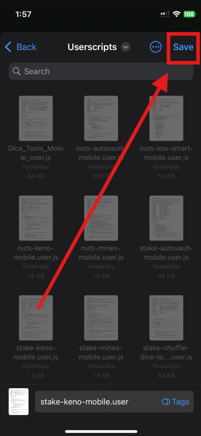
- Open Safari and go to the site the tool is designed for. Refresh the page once. The tool appears.
-
To enable / disable scripts, tap the puzzle piece in your URL bar and select Userscripts. From there you can tap a script to enable or disable it.
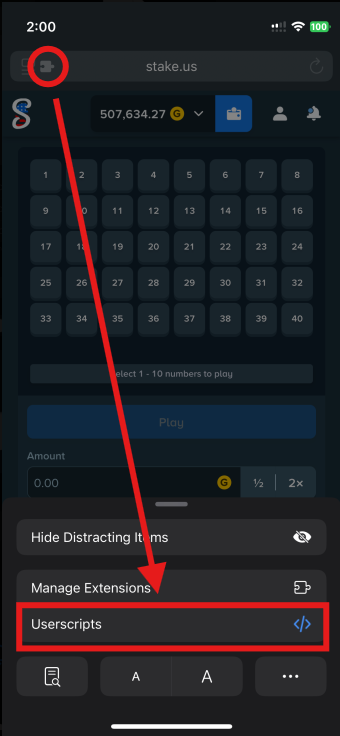
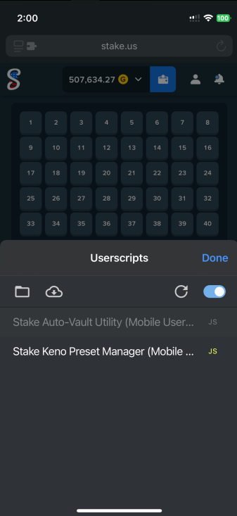